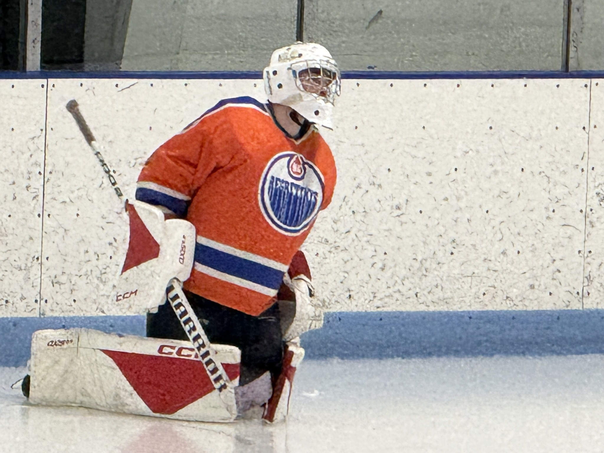
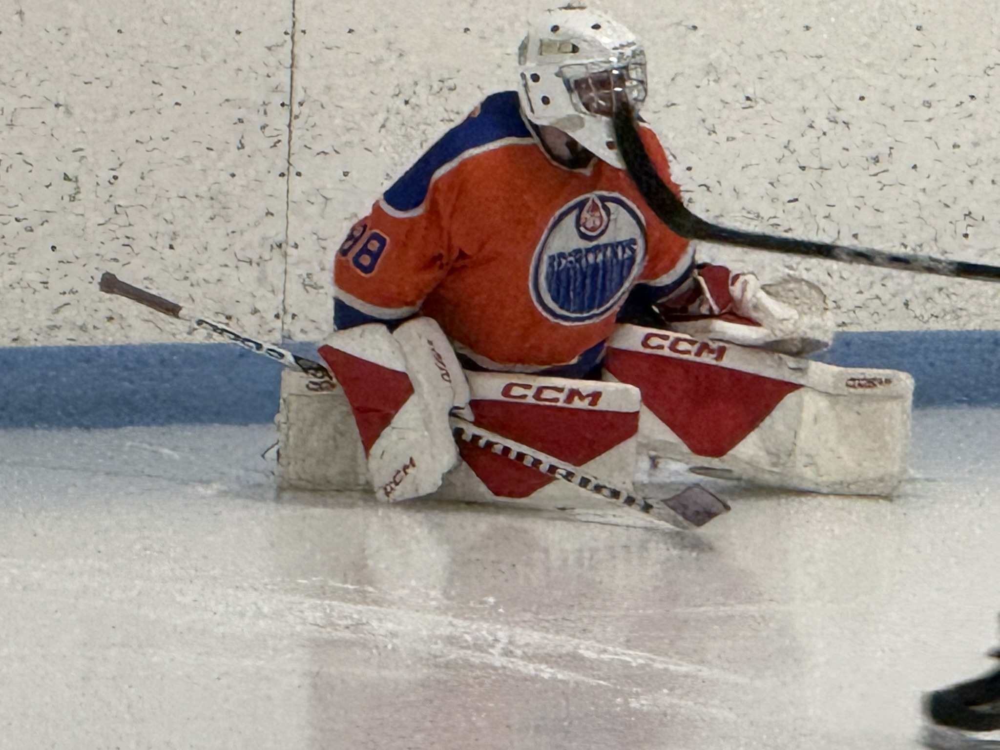

Photos and highlights
Live Feed
A gallery of hockey moments and goalie action.

Goalie action

Making the save

Otter Chaos moment

Ready in the crease
Videos & Highlights
Watch hockey footage from my uploaded recordings. Watch four clips from my hockey recordings. Videos are compressed MP4 files for easier web playback.
Hockey Highlight 1
Hockey Highlight 2
Hockey Highlight 3
Hockey Highlight 4
My Goalie Development
My focus is to keep developing through competitive games and practice. The areas I work on include consistency, positioning, tracking shots, rebound control, and communicating with teammates.
88Jersey number
GoaliePosition
Otter ChaosTeam
ImproveEvery season